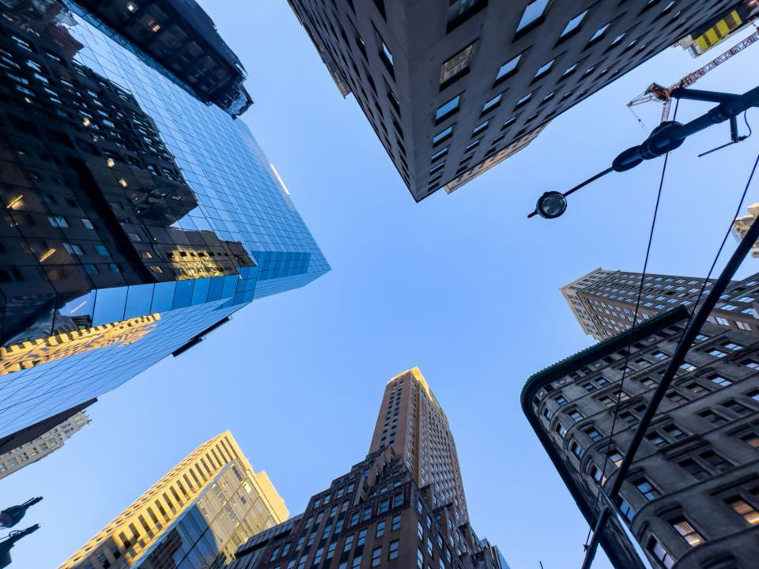

Priser
Tydliga priser utan överraskningar.
Utgångspriser för inredningsglas
Duschvägg, ramlös
Rak vägg i 10 mm lågjärnsglas.
fr. 18 500 krmonterad- Kalkskydd med tio års garanti
- Beslag i valfri finish
- Laseruppmätning
- Justeringsbesök efter två veckor
- Populärast
Glasvägg med stålramar
Smidda ramar och glas efter ditt rum.
fr. 14 900 krper löpmeter, monterad- Profil från 25 mm
- Valfri RAL-kulör
- Klart, ribbat eller frostat glas
- Dörr som tillval
Glasräcke
Laminerat glas i golvinfästning.
fr. 9 800 krper löpmeter, monterat- Beräkning av last ingår
- Inomhus eller utomhus
- Handledare som tillval
- Uppfyller BBR:s krav
Priserna inkluderar moms och gäller inom Storstockholm, före ROT-avdrag.
Från skiss till silikonfog
- 1

Ateljébesök
Vi ses på Riddargatan eller hemma hos dig. Ta med ritningar, bilder eller bara en idé.
- 2

Skiss och provglas
Du får en skiss med mått, glastyp och beslag, och provbitar att hålla mot rummet.
- 3

Laseruppmätning
När ytskikten är klara mäter vi med laser. Ramarna smids och glaset beställs på mått.
- 4

Montage
Montörerna monterar på en till tre dagar, silikonfogar och städar. Vi kommer tillbaka efter två veckor och justerar.
Vad är lågjärnsglas?
Vanligt glas har en grön ton som syns i kanten. Lågjärnsglas har mindre järnoxid och är nästan helt färglöst, vilket gör ramlösa duschväggar osynligare.
Hur lång är leveranstiden?
Duschväggar 3–4 veckor från uppmätning. Glasväggar med stålramar 6–8 veckor, eftersom ramarna smids och lackeras hos oss.
Kan ni montera innan badrummet är klart?
Vi mäter när kakel och klinker är på plats, eftersom glaset ska passa ytskiktet. Under projekteringen kan vi däremot ta fram ritningar tidigt.
Tar ni uppdrag utanför Stockholm?
Ja, inom 15 mil, och längre bort för större projekt. Resor utanför Storstockholm debiteras.
Vilka färger finns på stålramarna?
Alla RAL-kulörer i pulverlack, och även obehandlat stål med vax eller mässingsbehandling.
Kan jag göra ROT-avdrag för montaget?
Ja, för arbetskostnaden vid montage i din bostad. Vi redovisar det på fakturan.